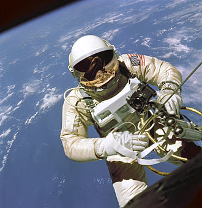

La exploracion espacial
La exploracion espacial designa los esfuerzos del ser humano en estudiar el espacio y sus astros desde el punto de vista científico y de su explotación económica. Estos esfuerzos pueden involucrar tanto seres humanos viajando en naves espaciales como satélites con recursos de telemetría o sondas teleguiadas enviadas a otros planetas (orbitando o aterrizando en la superficie de estos cuerpos celestes).
La ciencia que estudia los vuelos espaciales y la tecnología relacionada con ellos se denomina astronáutica. Las personas que pilotan naves espaciales, o son pasajeros en ellas, se llaman astronautas (en Rusia: cosmonautas ; en China: taikonautas). Técnicamente se considera astronauta a todo aquel que emprenda un vuelo suborbital (sin entrar en órbita) u orbital a como mínimo 100 km de altitud (considerado el límite externo de la atmósfera).
El cielo siempre ha atraído la atención y los sueños del ser humano. Ya en 1634 se publicó la que se considera primera novela de ciencia ficción, Somnium, de Johannes Kepler, que narra un hipotético viaje a la Luna. Más tarde, en 1865, en una famosa obra de ficción titulada De la Tierra a la Luna, Julio Verne escribió sobre un grupo de hombres que viajó hasta la Luna usando un gigantesco cañón.
En Francia, Georges Méliès, uno de los pioneros del cine, tomaba la novela de Verne para crear Le voyage dans la Lune (1902), una de las primeras películas de ciencia ficción en la que describía un increíble viaje a la Luna. En obras como La guerra de los mundos (1898) y El primer hombre en la Luna (1901), de H. G. Wells, también se concibieron ideas de exploración del espacio y de contacto con civilizaciones extraterrestres.